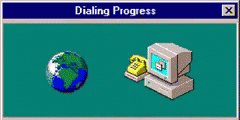

The Early Internet
Looking Back at the Web: 1995–2005
You are visitor # 00123456 since June 1, 2000
How We Connected

During the late 1990s and early 2000s, many families connected to the Internet using dial-up service. A computer would use a modem to call an Internet Service Provider (ISP) over a regular telephone line. Before a connection was established, the modem produced a series of beeps and static sounds that became one of the most recognizable sounds of the early Internet.
Most dial-up connections operated at speeds up to 56 Kbps. Compared to today's broadband and fiber Internet, downloading even a small file could take several minutes. Because the phone line was being used, someone could not make or receive a telephone call while the computer was connected to the Internet.
Companies such as AOL, EarthLink, and MSN made it easier for beginners to get online. Millions of promotional CDs were mailed to homes offering free trial hours, making it simple for new users to experience email, web browsing, and chat rooms for the first time.
Around the early 2000s, broadband Internet began replacing dial-up connections. Cable and DSL services provided much faster speeds while allowing users to stay connected continuously without tying up the telephone line. This change helped make online gaming, music downloads, video streaming, and larger websites much more practical.